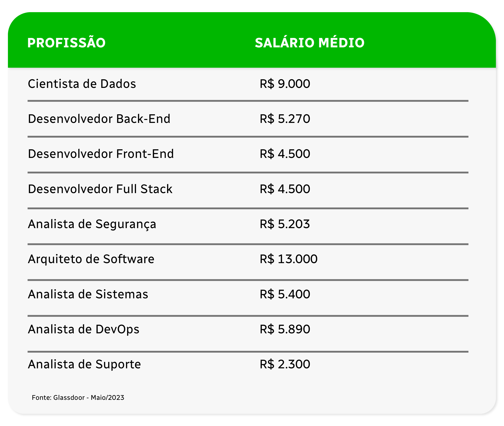

Nos últimos anos, com as grandes transformações digitais que vivenciamos, as carreiras em tecnologia despontaram como
promessas de futuro e fizeram com que esse mercado se tornasse um dos mais valorizados. A área tecnológica aparece
como um dos setores preferidos para quem quer ter boas oportunidades e uma remuneração acima da média.
Além disso, é uma área muito ampla, com profissões diferentes que se adequam a diversos tipos de perfis de atuação.
Se o seu sonho também é entrar nesse setor – começando do zero ou fazendo uma transição de carreira –, confira os
principais destaques da área de tecnologia para você começar com o pé direito.
Como o nome já diz, são profissões que trabalham com tecnologia, mas
também envolvem a criação, desenvolvimento e manutenção de produtos e
serviços digitais. Com a rápida evolução tecnológica das últimas décadas,
essas carreiras vivem uma alta demanda no Brasil e no mundo.
Mesmo com a procura elevada, ainda faltam muitos profissionais
qualificados para atender às necessidades do mercado. A Associação
Brasileira das Empresas de Tecnologia da Informação e Comunicação
(Brasscom) estima que haverá um déficit no mercado nacional de 106 mil
profissionais por ano até 2025. Ou seja, é uma ótima oportunidade para você
aproveitar e fazer a sua especialização em tecnologia.
Como falamos, a área de tecnologia é muito grande e compreende diversas
subáreas. No entanto, algumas se destacam, oferecendo o maior número de
vagas e representando os maiores investimentos das empresas. Entre as
principais, podemos destacar:
Desenvolvimento de Software: uma das áreas com maior destaque no
setor. O Desenvolvimento de Software lida com a criação de programas,
aplicativos e outros produtos digitais.
Ciência de Dados: área que cresceu muito nos últimos anos, de forma
proporcional ao aumento da produção de dados no universo digital. A
Ciência de Dados, ou Data Science, em inglês, é uma vertente que foca seu
trabalho em aproveitar e gerar insights com os dados que são gerados
pelos produtos digitais.
Cloud Computing: a famosa nuvem tornou-se essencial por permitir o
crescimento de diversos negócios. A computação em nuvem é a
capacidade de fornecer produtos e serviços de forma online, sem
necessidade de se consertar a um servidor local. Com isso, ganhou
destaque na área de tecnologia e hoje é responsável por grande parte dos
investimentos das organizações.
Segurança da Informação: com o uso crescente da internet para diversas
atividades e com muitos dados sendo hospedados na nuvem, a
preocupação com a segurança no ambiente digital também cresceu. Por
isso, a área de Cibersegurança tem ganhado destaque.
Inteligência Artificial e Machine Learning
que trabalha com o uso de sistemas inteligentes para diversas aplicações.
Com a evolução da tecnologia nos últimos anos, tornou-se uma vertente
bastante promissora e com um enorme crescimento no mercado.
Redes e Infraestrutura: área essencial que mantém toda a estrutura
necessária para o correto funcionamento de sistemas e de produtos
digitais. Demanda muitos profissionais em praticamente todo o tipo de
empresa.
Design e Experiência do Usuário (UX): vertente que ganhou grande
importância à medida que sites e aplicativos tornaram-se amplamente
populares. É responsável pela otimização da usabilidade desses sistemas,
focados sempre na melhor experiência para o usuário final.
Transformação Digital: com a grande importância que a presença digital
ganhou nos últimos tempos, essa vertente cuida da otimização de
processos e da cultura organizacional, ajudando na transformação de
negócios para se adequarem ao mundo atual. Por isso mesmo, tornou-se
muito importante para empresas de todos os tamanhos.
Gerenciamento de Projetos de Tecnologia: com o advento de
metodologias ágeis e inúmeros projetos nas empresas, o profissional
focado em fazer a gestão de todo o ecossistema de TI tornou-se muito
valorizado no mercado. Dessa forma, a área de gestão de projetos e de
gestão de TI ganharam muito destaque no mundo da tecnologia.
Essas são macroáreas que englobam diversas funções. A seguir, iremos falar
melhor sobre algumas delas.
São muitas as possibilidades de carreira em tecnologia. Independente do seu
perfil, com certeza haverá uma função que você conseguirá exercer com
maestria – basta se especializar e continuar na sua busca constante por
conhecimento.
Abaixo, listamos as principais profissões do setor:

Segundo o Guia Salarial 2023 da renomada consultoria de carreiras Robert
Half, os Desenvolvedores estão entre os profissionais de tecnologia mais
procurados pelas empresas no Brasil.
O profissional dessa área tem algumas opções para atuar com o
desenvolvimento de software. São elas:
Front-end nada mais é do que a codificação e a programação de tudo aquilo
que conseguimos visualizar em uma página na internet ou aplicativo. Isso
inclui todos os elementos visuais presentes: botões, textos, fotos, vídeos,
formulários, menus, entre tantos outros itens. Para isso, o profissional
trabalha com linguagens de programação como HTML, JavaScript, CSS e
bibliotecas e frameworks como Angular, React e Vue.js.
Como sites e aplicativos tornaram-se parte indispensável da nossa vida
cotidiana, o mercado precisa de muitos desenvolvedores front-end. Por isso,
essa é uma das carreiras que oferece o maior número de vagas no mercado.
Já o Dev. focado em back-end trabalha nas engrenagens que mantêm os
produtos digitais em operação. Ele lida com a parte invisível para os usuários
e é responsável por gerenciar os dados e implementar as funcionalidades do
sistema. Para fazer a configuração das regras de negócio e a parte de
comunicação com o banco de dados, ele usa linguagens como PHP, Python,
Ruby e Java.
Assim como o front-end, essa carreira oferece inúmeras vagas no mercado.
Em uma pesquisa recente da Forbes, o desenvolvedor back-end aparece
como uma das carreiras em tecnologia com mais vagas em 2023.
Esse é o profissional completo, que consegue trabalhar com back e front-end.
Com seu conhecimento e experiência, o Desenvolvedor Full Stack pode atuar
e tomar decisões estratégicas em qualquer camada do software. Isso
significa que eles podem agir em praticamente qualquer projeto de
tecnologia, desenvolvendo aplicações de forma completa, internamente e
externamente.

Ainda dentro da área de Desenvolvimento, temos o Engenheiro de Software.
Ele é o profissional que foca nos processos de desenvolvimento, ou seja, na
maneira como os produtos digitais irão funcionar. Diferente de um
Desenvolvedor, essa função atua de maneira mais estratégica, com uma
visão de todo o ciclo de vida do software, desde seu protótipo até a
conclusão.
Assim como os Devs, esses profissionais são muito requisitados pelo
mercado e possuem uma remuneração bastante alta.

Considerada uma das profissões do futuro, a Engenharia de Dados é
responsável por executar os projetos metodológicos criados pela área de
Ciência de Dados. Ou seja, é a área profissional que vai construir, testar e
executar toda a etapa prática do projeto, passando pela criação de sistemas
de coleta, armazenagem, processamento e manipulação dos dados (pipeline
de dados).
Portanto, é o Engenheiro de Dados o responsável por transformar os dados
brutos de diferentes formatos, como textos ou gráficos, em informações
possíveis de serem analisadas e trabalhadas por outro profissional. Assim
como um engenheiro tradicional, é ele quem vai projetar, construir e manter
as infraestruturas de dados de forma operacional.
Segundo o relatório Jobs of Tomorrow, do Fórum Econômico Mundial, o
Engenheiro de Dados aparece em terceiro lugar entre as profissões
emergentes na área de Dados e Inteligência Artificial. As oportunidades
nessas áreas serão os empregos com maior aumento de demanda até 2025.

A Ciência de Dados usa métodos computacionais e matemáticos, além de
estatística e otimização para processar e analisar conjuntos de dados,
explorando e prevendo o comportamento do usuário para gerar insights
estratégicos. Assim, o ,Cientista de Dados é o profissional que analisa e
organiza o grande volume de dados nas infraestruturas concebidas pelo
Engenheiro. Dessa forma, eles conseguem desenvolver soluções e encontrar
respostas para problemas que atingem um negócio.
Essa carreira em tecnologia também aparece como uma das profissões do
futuro. Com a infinidade de dados que são gerados diariamente, esse
profissional terá excelentes oportunidades de trabalho por todo o mundo.
Outra área que desponta como muito promissora é a Ciência de Dados
aplicada ao Mercado Financeiro.

São duas carreiras que oferecem um vasto mercado de atuação.
O Arquiteto de Software é um profissional que utiliza conhecimentos sobre
sistemas de informação, linguagens de programação e outros conceitos de
computação para fazer o planejamento técnico de softwares, estabelecendo
as regras principais que serão praticadas pela equipe de design e
desenvolvimento na criação do programa.
Já o Arquiteto de Soluções tem como função primordial desenvolver
soluções de infraestrutura para o ambiente corporativo. Ao conhecer o
negócio, as dores e as aplicações técnicas já utilizadas, cabe a ele
desenvolver soluções estratégicas de TI com os recursos disponíveis.
Seu papel, como mencionamos acima, é de alinhar e ajustar o negócio com a
sua infraestrutura técnica, contribuindo para que a organização alcance os
seus resultados, desenhando processos inovadores a partir de ferramentas e
aplicações já disponíveis no mercado, ou até mesmo que foram
desenvolvidas para o negócio em si. Essas ferramentas e aplicações, por sua
vez, foram desenhadas por um Arquiteto de Software.
Você sabia que existem cursos que unem as duas práticas? A nossa pós-
graduação em Arquitetura de Software e Soluções é um exemplo disso. É
uma especialização completa que vai te dar o conhecimento necessário para
iniciar nessa área tão valorizada da TI.

Essa é uma profissão que está em alta há mais de uma década. Já apareceu
em destaque no passado e entrou em nono lugar na lista do LinkedIn das 25
profissões mais buscadas em 2023.
No geral, esse profissional é formado em Análise e Desenvolvimento de
Sistemas e consegue atuar em diferentes tipos de empresas e projetos. Para
além de programar, esse profissional é responsável por fazer análises e
realizar mapeamento de processos e modelagem de dados visando o estudo
e a implementação de sistemas.
É um profissional com várias capacidades e pode atuar de diferentes
maneiras no mercado.
Quer saber quais? Leia nosso artigo e veja 10 opções de carreira em Análise e

O profissional de Cibersegurança é o responsável por garantir a proteção das
informações que trafegam no ciberespaço. Uma área profissional que ganhou
grande destaque nos últimos anos, principalmente depois de diversos ataques
sofridos por empresas de todo o mundo e a guerra cibernética travada entre
Em um relatório de 2022 da Microsoft, a empresa expressa a sua preocupação
com a grande falta desses profissionais no mercado. E prevê que existam 3,5
milhões vagas de emprego na área de segurança cibernética abertas
globalmente até 2025, representando um aumento de 350% em um período de
oito anos.
Essas são algumas das profissões em destaque na área de Tecnologia, mas o
setor ainda conta com diversas outras carreiras como Especialistas em Redes
de Computadores, Suporte Técnico, entre outros.
Como falamos acima, o mercado para profissionais de TI está muito aquecido.
Apesar dos recentes cortes que aconteceram nas big techs mundo afora, o setor
segue como um dos principais motores da economia mundial – afinal, hoje, tudo
passa por sistemas digitais.
Segundo a Associação Brasileira das Empresas de Software de, o volume total
investimentos globais em Tecnologia da Informação coloca o Brasil como o 10º
maior mercado do mundo e o maior da América Latina.
A Brasscom estima que as empresas de tecnologia demandem 797 mil talentos
de 2021 a 2025. O grande detalhe dessa alta demanda é que o Brasil não forma
a quantidade necessária de profissionais para atender à grande procura.
E já se fala em um apagão tecnológico, conforme manifesto lançado no fim de
2021 pela Federação das Associações das Empresas Brasileiras de Tecnologia
da Informação – Assespro. A Associação aponta para o risco do país sofrer
ainda mais com a escassez de mão de obra qualificada.
Por isso, há um movimento no mercado para formar mais profissionais
qualificados para trabalhar no país. Isso se deve a grande fuga de cérebros
brasileiros, com o números de profissionais que deixam o Brasil batendo
recordes a cada ano.
O mercado no exterior também é muito bom para os brasileiros, que veem nele
uma possibilidade de ter melhor qualidade de vida e com salários muito maiores
e bastante atrativos.
Com um mercado tão aquecido, além de muitas vagas, os salários tornam-se
melhores com o objetivo de atrair e reter os profissionais de tecnologia.
A área tech apresenta salários acima da média para diversos tipos de
profissionais. Com base no Glassdoor, listamos algumas profissões e seus
salários:
Para construir sua carreira em tecnologia, você precisa analisar alguns fatores,
como as suas aptidões para trabalhar com números, dados e lógica de
programação. Se você tem essa facilidade, a área tech pode te oferecer
inúmeras possibilidades, conforme falamos ao longo do texto.
Mas caso você não tenha tanta facilidade com essas áreas, saiba que isso pode
ser desenvolvido – e há carreiras menos técnicas, como as ligadas à gestão, por
exemplo.
Seja como for, o melhor caminho é ter uma graduação na área, e você encontra
formações gratuitas no site da XP Educação, seja em Sistemas de Informação,
Análise e Desenvolvimento de Sistemas ou Ciência de Dados. Esses cursos são
aprofundados e vão lhe dar todo o conhecimento necessário para lidar com
diferentes cenários do universo tecnológico.